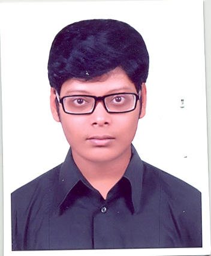

Sabbir Ahmed ShourovStudent, American Internatioanl University - Bangladesh (AIUB)Cell: +880 1737 475 212 Email: extinctCoder@outlook.com H#12 R#15, Nikunja-2, Khilkhet, Dhaka |
 |
|
|
||||||||||||||||||||
Education |
|
American Internatioanl University - Bangladesh (AIUB)Ka-66/1, Kuratoli Road, Kuril, Khilkhet, Dhaka 1229, Bangladesh Batchlor of Computer Science & Engineering (BSc in CSE), Faculty of Science & Information Technology (FSIT) |
2019 - 2014 |
Saidpur Gov't Technical School & College, Saidpur (SGTC)Saidpur, Nilphamary Higher Secondery School Cetificate (HSC), Department of Science |
2013 - 2011 |
Saidpur Gov't Technical School & College, Saidpur (SGTC)Saidpur, Nilphamary Secondery School Cetificate (SSC), Department of Science |
20011 - 2006 |